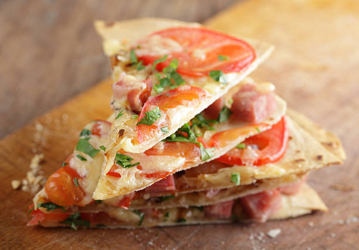

Tortilla Pizza

Description
This is a simple recipe that works great as a quick snack or meal. It's something you can make with your children or have prepared for a party. Using a tortilla instead of making or buying pizza dough cuts down on preparation and cook time. For a thicker crust, you can use two tortillas with a thin layer of cheese between them. For the toppings, you have the freedom to add anything you like. Onions, mushrooms, basil, pepperoni, chicken, peppers, etc all make great toppings.
Ingredients
- 1 flour tortilla
- 1/2 tbsp olive oil
- 1/3 cup mozarella cheese (grated)
- 1 roma tomato (sliced)
- Any other pizza toppings that you prefer
- 1 pinch of salt and black pepper to taste
- Fresh basil or other herbs (optional)
Steps
- Preheat oven or toaster oven to 400 degrees F.
- Spread the grated cheese over the tortilla.
- Add the sliced tomato on top of the cheese. Add a pinch of salt onto the tomatoes.
- Add the rest of your desired toppings. Top with a little olive oil and a little salt & pepper.
- Place in oven for 15-18 minutes, or until the pizza is a desired doneness.
- Top with any fresh herbs.
Back to recipes